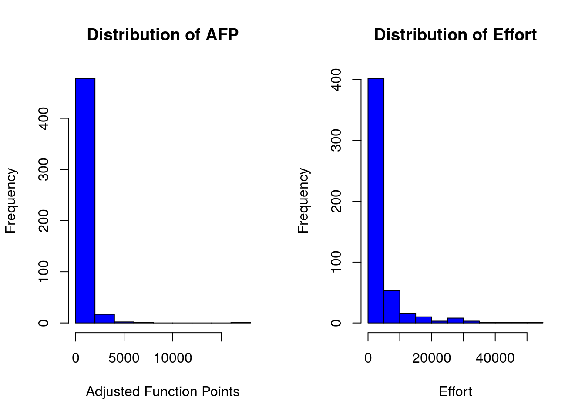

Chapter 6 Preprocessing
Following the data mining process, we describe what is meant by preprocessing, classical supervised models, unsupervised models and evaluation in the context of software engineering with examples
This task is probably the hardest and where most of effort is spend in the data mining process. It is quite typical to transform the data, for example, finding inconsistencies, normalising, imputing missing values, tranforming input data, merging variables, etc.
Typically, preprocessing consist of the following tasks (subprocesses):
- Data cleaning (consistency, noise detection, outliers)
- Data integration
- Data transformation (normalisation, discretisation) and derivation of new attributes from existing ones (e.g., population density from population and area)
- Missing data imputation
- Data reduction (feature selection and instace selection)
6.1 Data
Consistent data are semantically correct based on real-world knowledge of the problem, i.e., no constrains are violated and data that can be used for inducing models and analysis. For example, the LoC or effort is constrained to non-negative values. We can also consider that to multiple attributes are consistent among them, and even datasets (e.g., same metrics but collected by different tools)
6.2 Missing values
Three types of problems are usually associated with MVs in DM [5]:
- loss of efficiency
- complications in handling and analyzing the data
- bias resulting from differences between missing and complete data.
Imputation consists in replacing missing values for estimates of those missing values. Many algorithms do cannot handle missing values and imputation methods are needed.
In R, a missing value is represented with NA and the analyst must decide what to do with missing data. The simplest approach is to leave out instances (ignore missing -IM-) with with missing data. This functionality is supported by many base functions through the na.rm option.
6.3 Imputation methods
We can use simple approaches such as the replacing the missing values with the mean or mode of the attribute.
More elaborated approaches include:
- EM (Expectation-Maximisation)
- Distance-based
- kNN (k Nearest Neighbours)
- Clustering
6.4 Noise
Imperfections of the real-world data that influences negatively in the induced machine learning models. Approaches to deal with noisy data: * Robust learners capable of handling noisy data (e.g., C4.5 through pruning strategies) * Data polishing methods which aim to correct noisy instances prior training * Noise filters which are used to identify and eliminate noisy instances from the training data.
Types of noise data: * Class Noise (aka label noise). + There can be contradictory cases (all attributes have the same value except the class) + Misclassifications. The class attribute is not labeled with the true label (golden truth) * Attribute Noise. Values of attributes that are noise, missing or unknown.
6.5 Outliers
There is a large amount of literature related to outlier detection, and furthermore several definitions of outlier exist.
library(DMwR)
library(foreign)
kc1 <- read.arff("./datasets/defectPred/D1/KC1.arff")The LOF algorithm (lofactor), given a data set it produces a vector of local outlier factors for each case.
kc1num <- kc1[,1:21]
outlier.scores <- lofactor(kc1num, k=5)
plot(density(na.omit(outlier.scores)))
outliers <- order(outlier.scores, decreasing=T)[1:5]
print(outliers)## [1] 1 6 14 31 33Another simple method of Hiridoglou and Berthelot for positive observations.
6.6 Feature selection
Feature Selection (FS) aims at identifying the most relevant attributes from a dataset. It is important in different ways:
A reduced volume of data allows different data mining or searching techniques to be applied.
Irrelevant and redundant attributes can generate less accurate and more complex models. Furthermore, data mining algorithms can be executed faster.
It avoids the collection of data for those irrelevant and redundant attributes in the future.
The problem of FS received a thorough treatment in pattern recognition and machine learning. Most of the FS algorithms tackle the task as a search problem, where each state in the search specifies a distinct subset of the possible attributes (Blum and Langley 1997). The search procedure is combined with a criterion to evaluate the merit of each candidate subset of attributes. There are a multiple possible combinations between each procedure search and each attribute measure (Liu and Yu 2005).
There are two major approaches in FS from the method’s output point of view:
Feature subset selection (FSS)
Feature ranking in which attributes are ranked as a list of features which are ordered according to evaluation measures (a subset of features is often selected from the top of a ranking list).
FFS algorithms designed with different evaluation criteria broadly fall into two categories:
The filter model relies on general characteristics of the data to evaluate and select feature subsets without involving any data mining algorithm.
The wrapper model requires one predetermined mining algorithm and uses its performance as the evaluation criterion. It searches for features better suited to the mining algorithm aiming to improve mining performance, but it also tends to be more computationally expensive than filter model (Kohavi and John 1997,Langley (1994)).
Feature subset algorithms search through candidate feature subsets guide by a certain evaluation measure (Liu and Motoda 1998) which captures the goodness of each subset. An optimal (or near optimal) subset is selected when the search stops.
Some existing evaluation measures that have been shown effective in removing both irrelevant and redundant features include the consistency measure (Dash, Liu, and Motoda 2000), the correlation measure (Hall 1999) and the estimated accuracy of a learning algorithm (Kohavi and John 1997).
Consistency measure attempts to find a minimum number of features that separate classes as consistently as the full set of features can. An inconsistency is defined as to instances having the same feature values but different class labels.
Correlation measure evaluates the goodness of feature subsets based on the hypothesis that good feature subsets contain features highly correlated to the class, yet uncorrelated to each other.
Wrapper-based attribute selection uses the target learning algorithm to estimate the worth of attribute subsets. The feature subset selection algorithm conducts a search for a good subset using the induction algorithm itself as part of the evaluation function.
Langley (1994) notes that feature selection algorithms that search through the space of feature subsets must address four main issues: (i) the starting point of the search, (ii) the organization of the search, (iii) the evaluation of features subsets and (iv) the criterion used to terminate the search. Different algorithms address theses issues differently.
It is impractical to look at all possible feature subsets, even with a small number of attributes. Feature selection algorithms usually proceed greedily and are be classified into those that add features to an initially empty set (forward selection) and those that remove features from an initially complete set (backwards elimination). Hybrids both add and remove features as the algorithm progresses. Forward selection is much faster than backward elimination and therefore scales better to large data sets. A wide range of search strategies can be used: best-first, branch-and-bound, simulated annealing, genetic algorithms (see Kohavi and John (1997) for a review).
6.7 Instance selection
Removal of samples (complementary to the removal of attributes) in order to scale down the dataset prior to learning a model so that there is (almost) no performance loss.
There are two types of processes:
Prototype Selection (PS) (Garcia et al. 2012) when the subset is used with a distance based method (kNN)
Training Set Selection (TSS) (J. R. Cano, Herrera, and Lozano 2007) in which an actual model is learned.
It is also a search problem as with feature selection. Garcia et al. (2012) provide a comprehensive overview of the topic.
6.8 Discretization
This process transforms continuous attributes into discrete ones, by associating categorical values to intervals and thus transforming quantitative data into qualitative data.
6.9 Correlation Coefficient and Covariance for Numeric Data
Two random variables \(x\) and \(y\) are called independent if the probability distribution of one variable is not affected by the presence of another.
\(\tilde{\chi}^2=\frac{1}{d}\sum_{k=1}^{n} \frac{(O_k - E_k)^2}{E_k}\)
chisq.test(kc1$LOC_BLANK,kc1$BRANCH_TOTAL)##
## Chi-squared test for given probabilities
##
## data: kc1$LOC_BLANK
## X-squared = 20000, df = 2000, p-value <2e-16chisq.test(kc1$DESIGN_COMPLEXITY,kc1$CYCLOMATIC_COMPLEXITY)##
## Pearson's Chi-squared test
##
## data: kc1$DESIGN_COMPLEXITY and kc1$CYCLOMATIC_COMPLEXITY
## X-squared = 30000, df = 700, p-value <2e-166.10 Normalization
6.10.1 Min-Max Normalization
\(z_i=\frac{x_i-\min(x)}{\max(x)-\min(x)}\)
library(caret)
preObj <- preProcess(kc1[, -22], method=c("center", "scale"))6.10.2 Z-score normalization
TBD
6.11 Transformations
6.11.1 Linear Transformations and Quadratic Trans formations
TBD
6.11.2 Box-cox transformation
TBD
6.11.3 Nominal to Binary tranformations
TBD
6.12 Preprocessing in R
6.12.1 The dplyr package
The dplyr package created by Hadley Wickham. Some functions are similar to SQL syntax and it key functions in dplyr include:
- select: select columns from a dataframe
- filter: select rows from a dataframe
- summarize: allows us to do summary stats based upon the grouped variable
- group_by: group by a factor variable
- arrange: order the dataset
- joins: as in sql left join
Tutorial: https://github.com/justmarkham/dplyr-tutorial
Examples
library(dplyr)Describe the dataframe:
str(kc1)## 'data.frame': 2096 obs. of 22 variables:
## $ LOC_BLANK : num 0 0 0 0 2 0 0 0 0 2 ...
## $ BRANCH_COUNT : num 1 1 1 1 1 1 1 1 1 1 ...
## $ LOC_CODE_AND_COMMENT : num 0 0 0 0 0 0 0 0 0 0 ...
## $ LOC_COMMENTS : num 0 0 0 0 0 0 0 0 0 0 ...
## $ CYCLOMATIC_COMPLEXITY: num 1 1 1 1 1 1 1 1 1 1 ...
## $ DESIGN_COMPLEXITY : num 1 1 1 1 1 1 1 1 1 1 ...
## $ ESSENTIAL_COMPLEXITY : num 1 1 1 1 1 1 1 1 1 1 ...
## $ LOC_EXECUTABLE : num 3 1 1 1 8 3 1 1 1 9 ...
## $ HALSTEAD_CONTENT : num 11.6 0 0 0 18 ...
## $ HALSTEAD_DIFFICULTY : num 2.67 0 0 0 3.5 2.67 0 0 0 3.75 ...
## $ HALSTEAD_EFFORT : num 82.3 0 0 0 220.9 ...
## $ HALSTEAD_ERROR_EST : num 0.01 0 0 0 0.02 0.01 0 0 0 0.04 ...
## $ HALSTEAD_LENGTH : num 11 1 1 1 19 11 1 1 1 29 ...
## $ HALSTEAD_LEVEL : num 0.38 0 0 0 0.29 0.38 0 0 0 0.27 ...
## $ HALSTEAD_PROG_TIME : num 4.57 0 0 0 12.27 ...
## $ HALSTEAD_VOLUME : num 30.9 0 0 0 63.1 ...
## $ NUM_OPERANDS : num 4 0 0 0 7 4 0 0 0 10 ...
## $ NUM_OPERATORS : num 7 1 1 1 12 7 1 1 1 19 ...
## $ NUM_UNIQUE_OPERANDS : num 3 0 0 0 5 3 0 0 0 8 ...
## $ NUM_UNIQUE_OPERATORS : num 4 1 1 1 5 4 1 1 1 6 ...
## $ LOC_TOTAL : num 5 3 3 3 12 5 3 3 3 13 ...
## $ Defective : Factor w/ 2 levels "N","Y": 1 1 1 1 1 1 1 1 1 1 ...tbl_df creates a “local data frame” as a wrapper for better printing
kc1_tbl <- tbl_df(kc1)Filter:
# Filter rows: use comma or & to represent AND condition
filter(kc1_tbl, Defective == "Y" & LOC_BLANK != 0)## # A tibble: 251 × 22
## LOC_BLANK BRANCH_COUNT LOC_CODE_AND_COMMENT LOC_COMMENTS
## <dbl> <dbl> <dbl> <dbl>
## 1 6 21 0 10
## 2 5 15 0 2
## 3 2 5 0 0
## 4 4 5 0 2
## 5 2 11 0 2
## 6 2 23 0 3
## 7 1 11 0 2
## 8 1 13 0 2
## 9 2 17 0 2
## 10 3 1 0 0
## # ... with 241 more rows, and 18 more variables:
## # CYCLOMATIC_COMPLEXITY <dbl>, DESIGN_COMPLEXITY <dbl>,
## # ESSENTIAL_COMPLEXITY <dbl>, LOC_EXECUTABLE <dbl>,
## # HALSTEAD_CONTENT <dbl>, HALSTEAD_DIFFICULTY <dbl>,
## # HALSTEAD_EFFORT <dbl>, HALSTEAD_ERROR_EST <dbl>,
## # HALSTEAD_LENGTH <dbl>, HALSTEAD_LEVEL <dbl>, HALSTEAD_PROG_TIME <dbl>,
## # HALSTEAD_VOLUME <dbl>, NUM_OPERANDS <dbl>, NUM_OPERATORS <dbl>,
## # NUM_UNIQUE_OPERANDS <dbl>, NUM_UNIQUE_OPERATORS <dbl>,
## # LOC_TOTAL <dbl>, Defective <fctr>Another operator is %in%.
Select:
select(kc1_tbl, contains("LOC"), Defective)## # A tibble: 2,096 × 6
## LOC_BLANK LOC_CODE_AND_COMMENT LOC_COMMENTS LOC_EXECUTABLE LOC_TOTAL
## <dbl> <dbl> <dbl> <dbl> <dbl>
## 1 0 0 0 3 5
## 2 0 0 0 1 3
## 3 0 0 0 1 3
## 4 0 0 0 1 3
## 5 2 0 0 8 12
## 6 0 0 0 3 5
## 7 0 0 0 1 3
## 8 0 0 0 1 3
## 9 0 0 0 1 3
## 10 2 0 0 9 13
## # ... with 2,086 more rows, and 1 more variables: Defective <fctr>Now, kc1_tbl contains(“LOC”), Defective
Filter and Select together:
# nesting method
filter(select(kc1_tbl, contains("LOC"), Defective), Defective !=0)## # A tibble: 2,096 × 6
## LOC_BLANK LOC_CODE_AND_COMMENT LOC_COMMENTS LOC_EXECUTABLE LOC_TOTAL
## <dbl> <dbl> <dbl> <dbl> <dbl>
## 1 0 0 0 3 5
## 2 0 0 0 1 3
## 3 0 0 0 1 3
## 4 0 0 0 1 3
## 5 2 0 0 8 12
## 6 0 0 0 3 5
## 7 0 0 0 1 3
## 8 0 0 0 1 3
## 9 0 0 0 1 3
## 10 2 0 0 9 13
## # ... with 2,086 more rows, and 1 more variables: Defective <fctr>It is easier usign the chaining method:
# chaining method
kc1_tbl %>%
select(contains("LOC"), Defective) %>%
filter(Defective !=0)## # A tibble: 2,096 × 6
## LOC_BLANK LOC_CODE_AND_COMMENT LOC_COMMENTS LOC_EXECUTABLE LOC_TOTAL
## <dbl> <dbl> <dbl> <dbl> <dbl>
## 1 0 0 0 3 5
## 2 0 0 0 1 3
## 3 0 0 0 1 3
## 4 0 0 0 1 3
## 5 2 0 0 8 12
## 6 0 0 0 3 5
## 7 0 0 0 1 3
## 8 0 0 0 1 3
## 9 0 0 0 1 3
## 10 2 0 0 9 13
## # ... with 2,086 more rows, and 1 more variables: Defective <fctr>Arrange ascending
#
kc1_tbl %>%
select(LOC_TOTAL, Defective) %>%
arrange(LOC_TOTAL)## # A tibble: 2,096 × 2
## LOC_TOTAL Defective
## <dbl> <fctr>
## 1 1 N
## 2 1 N
## 3 1 N
## 4 1 N
## 5 1 N
## 6 1 N
## 7 1 N
## 8 1 N
## 9 1 N
## 10 1 N
## # ... with 2,086 more rowsArrange descending:
kc1_tbl %>%
select(LOC_TOTAL, Defective) %>%
arrange(desc(LOC_TOTAL))## # A tibble: 2,096 × 2
## LOC_TOTAL Defective
## <dbl> <fctr>
## 1 288 Y
## 2 286 Y
## 3 283 N
## 4 220 Y
## 5 217 Y
## 6 210 N
## 7 205 Y
## 8 184 Y
## 9 179 Y
## 10 176 Y
## # ... with 2,086 more rowsMutate:
kc1_tbl %>%
filter(Defective == "Y") %>%
select(NUM_OPERANDS, NUM_OPERATORS, Defective) %>%
mutate(HalsteadLength = NUM_OPERANDS + NUM_OPERATORS)## # A tibble: 325 × 4
## NUM_OPERANDS NUM_OPERATORS Defective HalsteadLength
## <dbl> <dbl> <fctr> <dbl>
## 1 64 107 Y 171
## 2 52 89 Y 141
## 3 17 41 Y 58
## 4 41 74 Y 115
## 5 54 95 Y 149
## 6 75 156 Y 231
## 7 54 95 Y 149
## 8 56 99 Y 155
## 9 69 124 Y 193
## 10 44 60 Y 104
## # ... with 315 more rowssummarise: Reduce variables to values
# Create a table grouped by Defective, and then summarise each group by taking the mean of loc
kc1_tbl %>%
group_by(Defective) %>%
summarise(avg_loc = mean(LOC_TOTAL, na.rm=TRUE))## # A tibble: 2 × 2
## Defective avg_loc
## <fctr> <dbl>
## 1 N 15.9
## 2 Y 44.7# Create a table grouped by Defective, and then summarise each group by taking the mean of loc
kc1_tbl %>%
group_by(Defective) %>%
summarise_each(funs(mean, min, max), BRANCH_COUNT, LOC_TOTAL)## # A tibble: 2 × 7
## Defective BRANCH_COUNT_mean LOC_TOTAL_mean BRANCH_COUNT_min
## <fctr> <dbl> <dbl> <dbl>
## 1 N 3.68 15.9 1
## 2 Y 10.12 44.7 1
## # ... with 3 more variables: LOC_TOTAL_min <dbl>, BRANCH_COUNT_max <dbl>,
## # LOC_TOTAL_max <dbl>It seems than the number of Defective modules is larger than the Non-Defective ones. We can count them with:
# n() or tally
kc1_tbl %>%
group_by(Defective) %>%
tally()## # A tibble: 2 × 2
## Defective n
## <fctr> <int>
## 1 N 1771
## 2 Y 325It seems that it’s an imbalanced dataset…
# randomly sample a fixed number of rows, without replacement
kc1_tbl %>% sample_n(2)## # A tibble: 2 × 22
## LOC_BLANK BRANCH_COUNT LOC_CODE_AND_COMMENT LOC_COMMENTS
## <dbl> <dbl> <dbl> <dbl>
## 1 4 5 0 2
## 2 0 1 0 0
## # ... with 18 more variables: CYCLOMATIC_COMPLEXITY <dbl>,
## # DESIGN_COMPLEXITY <dbl>, ESSENTIAL_COMPLEXITY <dbl>,
## # LOC_EXECUTABLE <dbl>, HALSTEAD_CONTENT <dbl>,
## # HALSTEAD_DIFFICULTY <dbl>, HALSTEAD_EFFORT <dbl>,
## # HALSTEAD_ERROR_EST <dbl>, HALSTEAD_LENGTH <dbl>, HALSTEAD_LEVEL <dbl>,
## # HALSTEAD_PROG_TIME <dbl>, HALSTEAD_VOLUME <dbl>, NUM_OPERANDS <dbl>,
## # NUM_OPERATORS <dbl>, NUM_UNIQUE_OPERANDS <dbl>,
## # NUM_UNIQUE_OPERATORS <dbl>, LOC_TOTAL <dbl>, Defective <fctr># randomly sample a fraction of rows, with replacement
kc1_tbl %>% sample_frac(0.05, replace=TRUE)## # A tibble: 105 × 22
## LOC_BLANK BRANCH_COUNT LOC_CODE_AND_COMMENT LOC_COMMENTS
## <dbl> <dbl> <dbl> <dbl>
## 1 0 1 0 0
## 2 0 1 0 0
## 3 0 6 0 0
## 4 0 1 0 0
## 5 0 1 0 0
## 6 5 17 0 7
## 7 23 25 0 22
## 8 5 13 1 4
## 9 0 1 0 0
## 10 0 1 0 0
## # ... with 95 more rows, and 18 more variables:
## # CYCLOMATIC_COMPLEXITY <dbl>, DESIGN_COMPLEXITY <dbl>,
## # ESSENTIAL_COMPLEXITY <dbl>, LOC_EXECUTABLE <dbl>,
## # HALSTEAD_CONTENT <dbl>, HALSTEAD_DIFFICULTY <dbl>,
## # HALSTEAD_EFFORT <dbl>, HALSTEAD_ERROR_EST <dbl>,
## # HALSTEAD_LENGTH <dbl>, HALSTEAD_LEVEL <dbl>, HALSTEAD_PROG_TIME <dbl>,
## # HALSTEAD_VOLUME <dbl>, NUM_OPERANDS <dbl>, NUM_OPERATORS <dbl>,
## # NUM_UNIQUE_OPERANDS <dbl>, NUM_UNIQUE_OPERATORS <dbl>,
## # LOC_TOTAL <dbl>, Defective <fctr># Better formatting adapted to the screen width
glimpse(kc1_tbl)## Observations: 2,096
## Variables: 22
## $ LOC_BLANK <dbl> 0, 0, 0, 0, 2, 0, 0, 0, 0, 2, 2, 0, 2, 1...
## $ BRANCH_COUNT <dbl> 1, 1, 1, 1, 1, 1, 1, 1, 1, 1, 1, 1, 1, 1...
## $ LOC_CODE_AND_COMMENT <dbl> 0, 0, 0, 0, 0, 0, 0, 0, 0, 0, 0, 0, 0, 0...
## $ LOC_COMMENTS <dbl> 0, 0, 0, 0, 0, 0, 0, 0, 0, 0, 0, 0, 0, 0...
## $ CYCLOMATIC_COMPLEXITY <dbl> 1, 1, 1, 1, 1, 1, 1, 1, 1, 1, 1, 1, 1, 1...
## $ DESIGN_COMPLEXITY <dbl> 1, 1, 1, 1, 1, 1, 1, 1, 1, 1, 1, 1, 1, 1...
## $ ESSENTIAL_COMPLEXITY <dbl> 1, 1, 1, 1, 1, 1, 1, 1, 1, 1, 1, 1, 1, 1...
## $ LOC_EXECUTABLE <dbl> 3, 1, 1, 1, 8, 3, 1, 1, 1, 9, 8, 1, 8, 1...
## $ HALSTEAD_CONTENT <dbl> 11.6, 0.0, 0.0, 0.0, 18.0, 11.6, 0.0, 0....
## $ HALSTEAD_DIFFICULTY <dbl> 2.67, 0.00, 0.00, 0.00, 3.50, 2.67, 0.00...
## $ HALSTEAD_EFFORT <dbl> 82.3, 0.0, 0.0, 0.0, 220.9, 82.3, 0.0, 0...
## $ HALSTEAD_ERROR_EST <dbl> 0.01, 0.00, 0.00, 0.00, 0.02, 0.01, 0.00...
## $ HALSTEAD_LENGTH <dbl> 11, 1, 1, 1, 19, 11, 1, 1, 1, 29, 19, 1,...
## $ HALSTEAD_LEVEL <dbl> 0.38, 0.00, 0.00, 0.00, 0.29, 0.38, 0.00...
## $ HALSTEAD_PROG_TIME <dbl> 4.57, 0.00, 0.00, 0.00, 12.27, 4.57, 0.0...
## $ HALSTEAD_VOLUME <dbl> 30.9, 0.0, 0.0, 0.0, 63.1, 30.9, 0.0, 0....
## $ NUM_OPERANDS <dbl> 4, 0, 0, 0, 7, 4, 0, 0, 0, 10, 7, 0, 7, ...
## $ NUM_OPERATORS <dbl> 7, 1, 1, 1, 12, 7, 1, 1, 1, 19, 12, 1, 1...
## $ NUM_UNIQUE_OPERANDS <dbl> 3, 0, 0, 0, 5, 3, 0, 0, 0, 8, 5, 0, 5, 0...
## $ NUM_UNIQUE_OPERATORS <dbl> 4, 1, 1, 1, 5, 4, 1, 1, 1, 6, 5, 1, 5, 1...
## $ LOC_TOTAL <dbl> 5, 3, 3, 3, 12, 5, 3, 3, 3, 13, 12, 3, 1...
## $ Defective <fctr> N, N, N, N, N, N, N, N, N, N, N, N, N, ...6.13 Other libraries and tricks
The lubridate package contains a number of functions facilitating the conversion of text to POSIX dates. As an example, consider the following code. We may use this, for example, with time series.
For example https://cran.r-project.org/doc/contrib/de_Jonge+van_der_Loo-Introduction_to_data_cleaning_with_R.pdf
library(lubridate)
dates <- c("15/02/2013", "15 Feb 13", "It happened on 15 02 '13")
dmy(dates)## [1] "2013-02-15" "2013-02-15" "2013-02-15"References
Blum, A.L., and P. Langley. 1997. “Selection of Relevant Features and Examples in Machine Learning.” Edited by R. Greiner and D. Subramanian. Artificial Intelligence 97 (1-2): 245–71.
Liu, H., and L. Yu. 2005. “Toward Integrating Feature Selection Algorithms for Classification and Clustering.” IEEE Trans. on Knowledge and Data Eng. 17 (3): 1–12.
Kohavi, R., and G.H. John. 1997. “Wrappers for Feature Subset Selection.” Artificial Intelligence 1-2: 273–324.
Langley, P. 1994. “Selection of Relevant Features in Machine Learning.” In Procs. of the Aaai Fall Symposium on Relevance, 140–44.
Liu, H., and H. Motoda. 1998. Feature Selection for Knowlegde Discovery and Data Mining. London, UK: Kluwer Academic Publishers.
Dash, M., H. Liu, and H. Motoda. 2000. “Consistency Based Feature Selection.” In Pacific-Asia Conf. on Knowledge Discovery and Data Mining, 98–109.
Hall, M.A. 1999. “Correlation-Based Feature Selection for Machine Learning.” PhD thesis, Hamilton, New Zealand: University of Waikato, Department of Computer Science.
Garcia, S., J. Derrac, J. Cano, and F. Herrera. 2012. “Prototype Selection for Nearest Neighbor Classification: Taxonomy and Empirical Study.” IEEE Transactions on Pattern Analysis and Machine Intelligence 34 (3): 417–35. doi:10.1109/TPAMI.2011.142.
Cano, José Ramón, Francisco Herrera, and Manuel Lozano. 2007. “Evolutionary Stratified Training Set Selection for Extracting Classification Rules with Trade Off Precision-Interpretability.” Data & Knowledge Engineering 60 (1): 90–108. doi:http://dx.doi.org/10.1016/j.datak.2006.01.008.